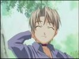

| Keitarou is a naive and clumsy guy, and nicer than what is actually good for him. He has a hard time saying no, so it's easy for the tricky Mitsune to talk him into things and take advantage of him. Being clumsy and not careful at some times, he often walks in on the girls when they're changing, or stumbling and falling on them etc... Usually, he receives a punch from Naru or a Katana strike from Motoko for this. |
| Naru, like Keitarou, is aiming for Toudai. She is a very good and intense student, she is even considered the national Number 1 in the preparation tests. So it's natural that Keitarou is studying together with her. Later in the story when Otohime Mutsumi moves in at an apartment near Hinatasou, she uses to study together with Naru and Keitarou, too. Despite all of Naru's efforts, she failed the entrance exam in the first attempt. Naru and Keitarou quickly develop feelings for each other. She would never admit it, though, not even to herself. Because of misunderstandings that result from Keitarou's clumsyness and naiveness, she is often mad at him, which means Keitarou is getting beat up by her. |
|  | All Mitsune wants in life is to have as much fun as possible. For that reason, she loves to set up other people in situations that could get... interesting. Her main target is probably Keitarou since through his naivety he's easy to talk into things. However, Mitsune isn't a bad person. Though her schemes get out of hand sometimes, she never intends hurting people or something like that. In fact, all her scheming with Keitarou and Naru over all aims at getting the two together. |
| Shinobu is a junior high student and actually not supposed to live at a dormitory at her age. She became a resident of Hinatasou when her parents got divorced and each of them wanted to move to another town with Shinobu. Shinobu, however, didn't want to move at all... Keitarou and the girls could finally convince Shinobu's parents that it would be ok if she lived at Hinatasou. Since she is very good at cooking and housework, she usually does the cooking for all the residents. Shinobu is a very shy, quiet and caring girl with a secret (but rather obvious) crush on Keitarou. Keitarou being happy is the most important to her. |
| Motoko is the youngest daughter of the Aoyama family. All women of the Aoyama family have been great swordsmasters since ancient times. And so is Motoko, though she isn't a real match for her older sisters yet. The Aoyama family owns a Dôjô in Kyoto. All Motoko is interested in is the sword and the Warrior's Path. Or so she says. Much to her own annoyance, she has developed kind of a crush on Keitarou. Since it appears to be a weakness to her, she would never admit it. In fact, she even kind of hates Keitarou for her having a crush on him. So Keitarou gets beaten up by her or swept away by one of her secret techniques all the time. |
| Suu is a very cheerful and funny girl, always hungry, head full of weird ideas. She is bursting with energy, which makes keeping control of her quite difficult. Motoko is merely the only one who can keep up with her. Shinobu and Sara are Suu's best friends. Suu is a tech wizard. She invents and builds robots and all kinds of weird devices in her room, like Mecha Tama, the Dream Vision, the Turtle Radar, a Power Suit etc. Her inventions always have a kind of ancient look and feel to it, somehow like an ancient indian temple statue. The devices are usually marked with a three-eyes symbol. |